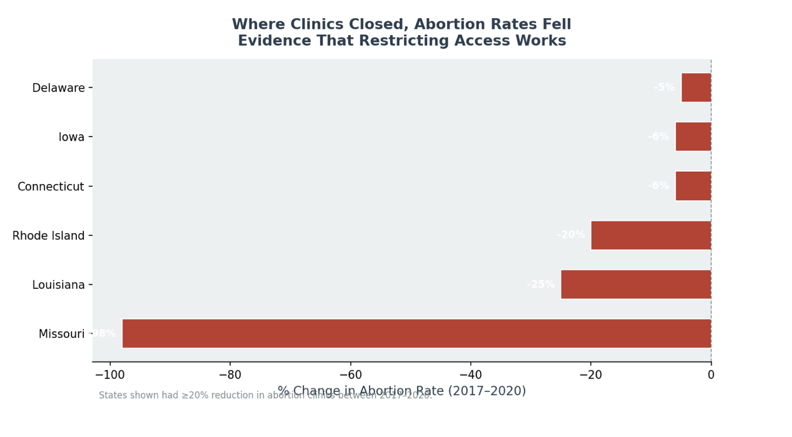
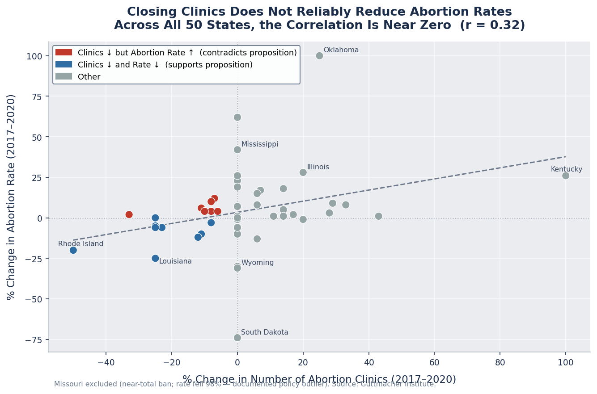
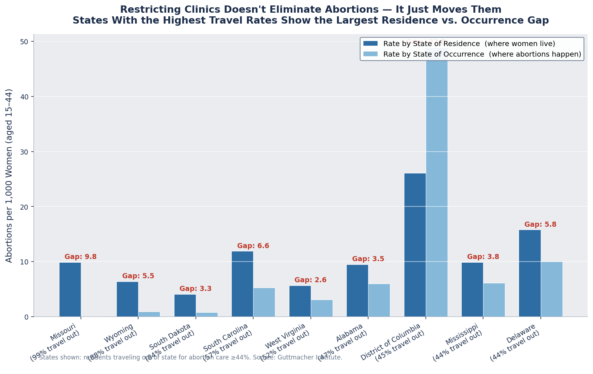

Proposition: Restricting Abortion Clinic Access Has Effectively Reduced Abortion Rates
FOR the Proposition

Design Decisions and Rationale:
- −2 Cherry-picking We selected only states where both clinic access and abortion rates decreased simultaneously, hiding the majority of states where clinic closures did not correspond to rate reductions. This filtering creates a false impression of a consistent, nationwide pattern.
- −1.5 Dramatic framing The horizontal bar chart emphasizes Missouri's extreme −98% rate change, which dominates the visual. This anchors the viewer on an outlier caused by a near-total abortion ban — a policy effect far beyond mere clinic restriction — making the relationship appear more causal than the data supports.
- −1 Misleading title The title "Evidence That Restricting Access Works" frames the chart as proof of causation. The visualization shows only correlation within a cherry-picked subset, and no causal mechanism is established or disclosed.
AGAINST the Proposition: Restricting Abortion Clinic Access Has NOT Effectively Reduced Abortion Rates

Design Decisions and Rationale:
- +2 Full data transparency All 49 states are plotted (Missouri excluded as a documented policy outlier — it enacted a near-total ban, not merely clinic restrictions). The correlation coefficient is displayed explicitly in the title. Showing all states rather than a selection gives an honest picture of the aggregate relationship.
- +1.5 Quadrant color coding Points are color-coded by which quadrant they fall in: red dots represent states where clinics decreased but abortion rates actually rose — directly contradicting the proposition. This encoding makes the mixed, inconsistent pattern immediately visible without hiding any data.
- +1.5 Transparent outlier disclosure Missouri's exclusion is noted in the annotation with a specific justification (near-total ban; −98% rate change). Unlike Page 1 which excluded DC silently, this exclusion is disclosed and reasoned, allowing readers to evaluate the decision themselves.

Design Decisions and Rationale:
- +2 Dual-rate comparison By showing both the residence-based abortion rate (where women live) and the occurrence-based rate (where abortions happen) side by side, the visualization makes the displacement effect concrete and verifiable. The gap between the two bars directly shows that women in restrictive states are not forgoing abortions — they are traveling to obtain them elsewhere.
- +1.5 Contextual axis labels Out-of-state travel percentages are embedded directly into the x-axis state labels (e.g., "Mississippi (57% travel out)"). This grounds each bar in an additional data dimension without requiring a separate chart, giving readers full context at a glance.
- +1 Threshold-based filtering disclosed Only states where ≥30% of residents traveled out of state are shown, and this threshold is stated in the chart annotation. The filter is earnest because it highlights the states where displacement is most pronounced — it strengthens the argument with real data rather than hiding contrary cases.
Final Reflection
One part of the project that was straightforward was visualizing the data to tell a story about Abortion Rates in the United States. Drawing upon the data, we pulled rates of abortion over time as more and more clinics were built. Something that surprised us the most was that adjusting a color gradient on a dashboard could drastically alter the emotional tone of the visualization. It became apparent that the raw data alone does not dictate the narrative. The visual framing holds immense power to shift the viewer's perception.
This realization shapes how we viewed ethical analysis and visualization. It is not about ensuring that the data is mathematically accurate or bug-free; it requires honesty behind the visuals, to not twist the audience's views or biases. An ethical visualization has to provide enough context, acknowledge the nuances, and the structural factors impacting abortion seekers and providers across different states. This guides the viewer towards a comprehensive understanding rather than a reductive conclusion.
Drawing the boundary between an "acceptable" persuasive choice and a "misleading" one comes down to transparency and the preservation of data. Acceptable persuasion uses sound design techniques to highlight a statistically significant finding, such as drawing attention to a clear disparity in accessibility to certain providers. Misleading choices are intentionally made to obscure the truth. Cherry picking specific timeframes or certain data would lead to manipulation, a choice that prioritizes an unethical agenda over integrity.